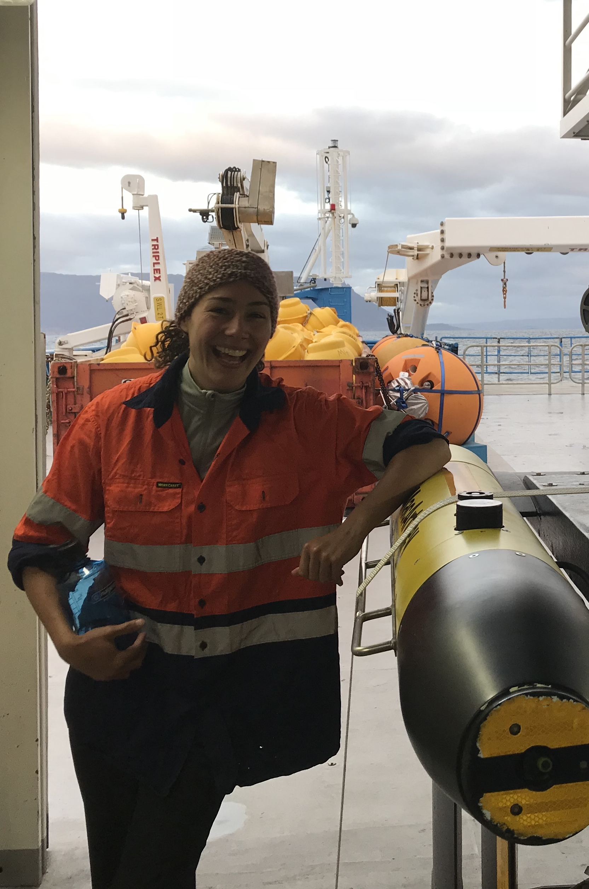
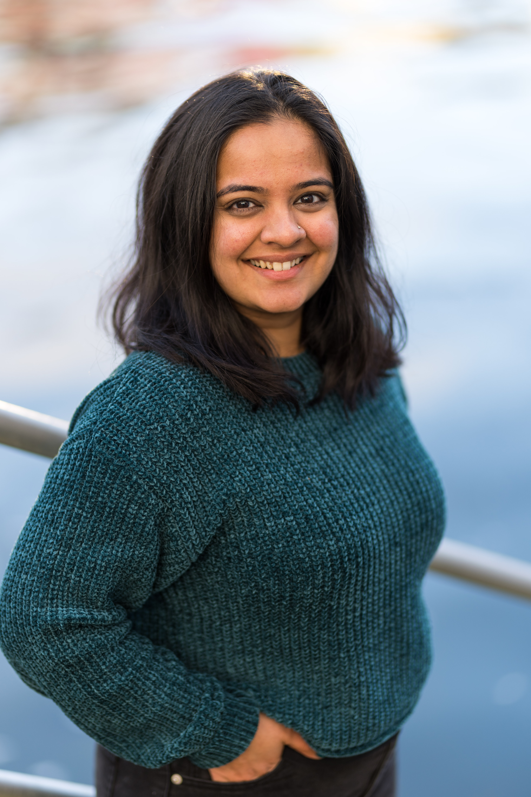

Sustainable aquafeeds research project is led by Professor Julia Blanchard and has numerous international collaborators and an industry partner Biomar
Our team
Prof Julia Blanchard
|
Prof Blanchard is a world expert on modelling human impacts on marine ecosystems from global to local scales. As a part of her ARC future fellowship and ARC linkage project, she will be studying the linkages between fisheries, agriculture and aquaculture. |
Dr Richard Cottrell
|
Rich is a Research Fellow at the Institute for Marine and Antarctic Studies, at the University of Tasmania, Australia. He is co-lead of the Sustainable Aqufeeds Project, responsible for coordinating project research and communication. Rich’s expertise centres broadly on food system sustainability, specifically on the importance of aquatic-terrestrial linkages for sustainability outcomes. |
Prof Chris Carter |
Chris Carter has been researching fish feeds and ingredients since his PhD (1990) in which he used energy budgets to investigate 3 different feeds for grass carp. Since then, he and colleagues have worked on: new formulated feeds for species such as rock lobsters, salmonids and tuna; nutritionally viable alternatives to fishmeal and fish oil including plants and microorganisms; using additives such as enzymes to improve feeds and ingredients. |
Dr Louise Adams
|
*Insert bio* |
Prof Catriona MacLeod
|
Professor Catriona Macleod is interim Executive Director at the Institute for Marine and Antarctic Studies at the University of Tasmania. She has more than 25 years’ experience in marine and coastal impact assessment, ecosystem interactions and natural resource management, particularly in relation to aquaculture. She has a keen interest in understanding system-wide interactions and multiple use management issues. |
Dr Beth Penrose
|
Dr Beth Penrose is an interdisciplinary scientist working on the link between soil and plant nutrition and human and animal health. She is interested in how nutrients flow through systems and is focussed on minerals, including micronutrients and contaminants. |


Partner investigators
Professor Duncan Cameron
|
Duncan Cameron is an award-winning professor of plant and soil biology and former Co-Director of the ‘flagship’ research institute, The Institute for Sustainable Food at the University of Sheffield, UK. He is an environmental microbiologist/biological chemist and his research seeks to understand how soil microbes enhance plant nutrition and health in the context of sustainable agriculture and global food security. |
Professor Ben Halpern
|
Dr. Ben Halpern is the Director of the National Center for Ecological Analysis and Synthesis (NCEAS) and Professor in the Bren School of Environmental Science and Management at UC Santa Barbara. His research leverages environmental data science and synthesis to address a wide range of topics centered on the many ways that human activities are impacting ocean ecosystems and species, and the consequences of those impacts on the benefits we receive in return. For the linkage grant, Ben will co-lead work to globally map cumulative pressures from different aquaculture feed compositions |
.jpeg)

Industry partners
David Whyte |
|
Erik Gracey
|
I am BioMar’s Group Sustainability Manager – Commercial. I have a BA in International Business, an Associate of Science in Atmospheric Science, and an MSC in Industrial Ecology. My professional highlights include working with salmon farmers in Western Norway on Integrated Multi-Trophic Aquaculture, upcycling of seafood by-products into new products for human consumption, and now at BioMar - building resilient supply chains for sustainable farmed seafood – from farm to fork. |
Dr Helen Hamilton |
|
Dr Tom Fox-Smith |
|
Marceau Cormery |

PhD students
Alexandra Johne |
Alex moved to Hobart about 6 and a half years ago to study Marine Biology at IMAS. For her BSc Honours project, she used an integral projection model (IPM) to explore individual growth variability in farmed Chinook salmon in response to different feed ration levels. Prior to starting her PhD, she worked as a research assistant for the Blue Economy Cooperative Research Centre, collating information on the challenges of rearing salmonids in offshore aquaculture. In her PhD, Alex explores inter- and intra-individual variability in feed efficiency, growth trajectories and nutrient outputs of farmed salmon under different climate change and feed composition scenarios. |
Xin Zhan (Kathy)
|
Kathy completed a Master of Marine and Antarctic Science at UTAS in 2021. Currently, she is a PhD candidate studying the mineral composition of Atlantic salmon. My main research interests focus on aquatic finfish morphology, digestibility, histology, microbiome, transcriptome as well as tracking nutrient distribution from the environment, feed ingredients to products, especially minerals. |
Sowdamini Sesha Prasad |
Sowdamini worked on human-wildlife conflict and terrestrial ecology in southern India before moving to Australia. Currently, she is a PhD candidate at UTAS and will be modelling the impacts of feed stoichiometric changes through fish and food webs. Her project is co-funded by the linkage grant and will integrate experiments and models to assess local impacts of changing feeds. |